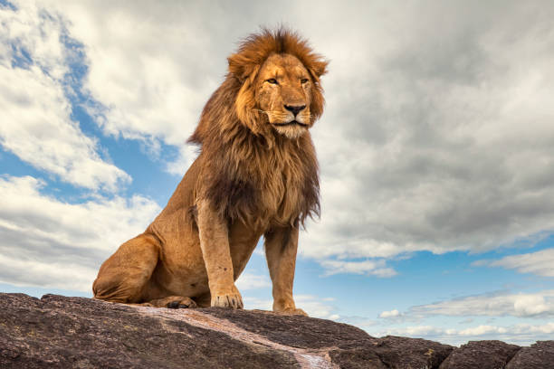
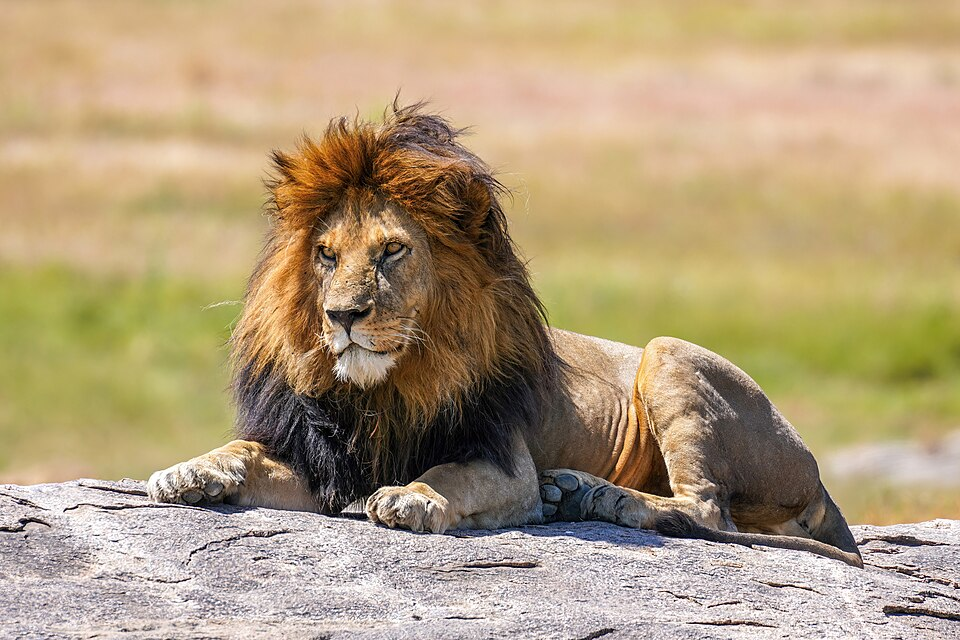
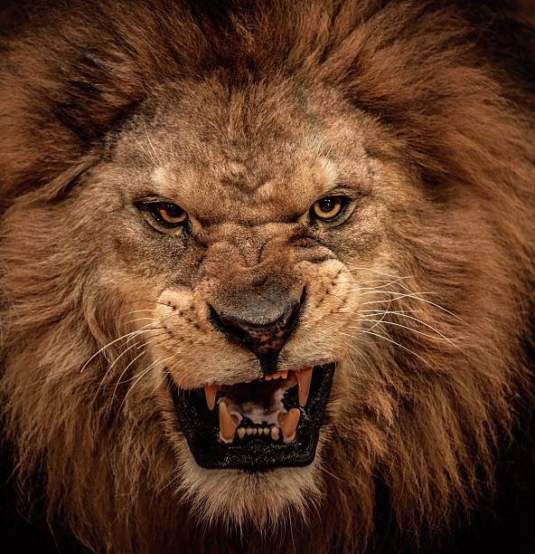
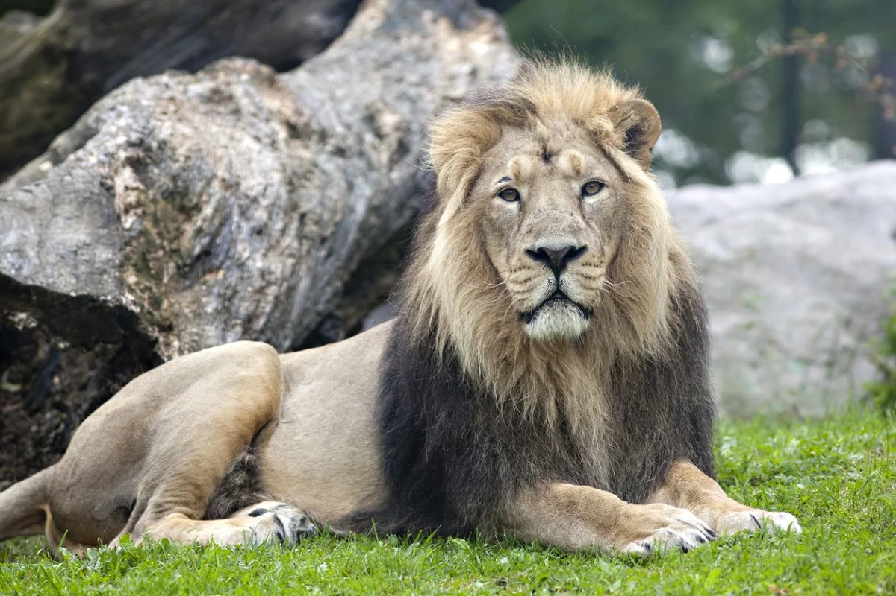
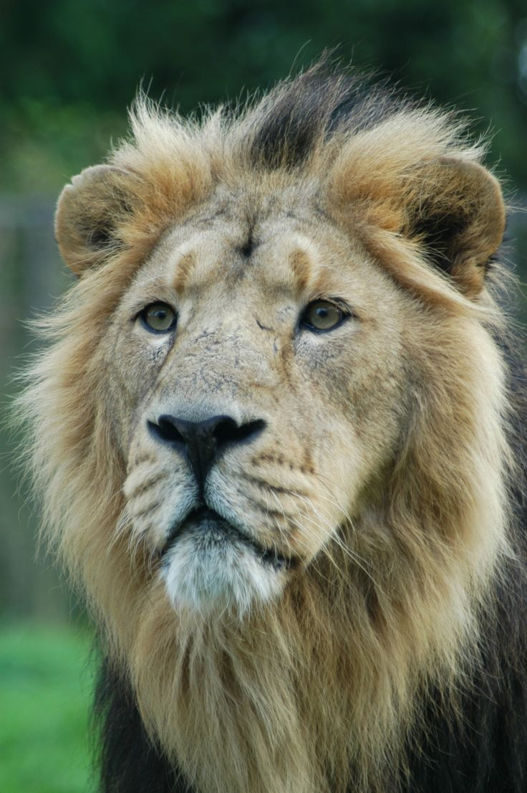
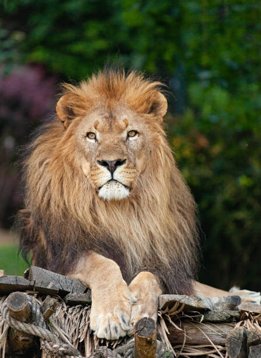

Lions have long been symbols of strength, courage, and royalty, earning their title as the "King of the Jungle." These powerful big cats dominate the savannas, command respect in the animal kingdom, and captivate human imagination. In this blog, we’ll explore the fascinating world of lions—their behavior, social structure, conservation status, and why they remain one of Earth’s most iconic predators.
Lion Basics:
The Apex Predator
Species & Subspecies
There are two recognized lion subspecies:
- African Lion (Panthera leo) – Found in sub-Saharan Africa.



- Asiatic Lion (Panthera leo persica) – A critically endangered population in India’s Gir Forest.



Physical Traits
Size: Males weigh 330–550 lbs (150–250 kg), while females are smaller at 265–400 lbs (120–180 kg).
Mane: A male’s mane signifies health and dominance—thicker and darker manes attract more mates.
Speed & Strength: Lions can sprint up to 50 mph (80 km/h) in short bursts and take down prey much larger than themselves.
The Social Life of Lions
Pride Structure
Unlike most big cats, lions are highly social, living in groups called prides:
Females (Lionesses): Do 90% of the hunting in coordinated teams.
Males: Protect the territory and cubs from rival males.
Cubs: Raised communally, with all females nursing each other’s young.
Hunting & Diet
Lions prefer large herbivores like zebras, wildebeests, and buffalo.
They hunt at night or dawn, using stealth and teamwork.
Males often scavenge kills from hyenas or leopards when possible.
Communication
Roars can be heard 5 miles (8 km) away, used to mark territory.
Head rubbing & grooming strengthen social bonds.
Why Lions Matter in the Ecosystem
Keystone Predators
Lions help control herbivore populations, preventing overgrazing.
Their presence maintains biodiversity by influencing prey behavior.
Cultural Significance
Featured in mythology, heraldry, and pop culture (e.g., The Lion King).
Symbolize power, leadership, and bravery across civilizations.
Threats to Lion Survival
1. Habitat Loss
Expanding farmland and urbanization shrink their territories.
2. Human-Wildlife Conflict
Retaliatory killings occur when lions prey on livestock.
3. Poaching & Trophy Hunting
Despite regulations, illegal hunting and canned hunting (captive-bred lions shot for trophies) remain threats.
4. Declining Prey
Overhunting of antelopes and other prey species reduces food sources.
Conservation Status
African Lions: Vulnerable (~20,000 left in the wild).
Asiatic Lions: Endangered (~600 remain in India).br
How You Can Help Protect Lions
✅ Support Conservation Groups (e.g., Panthera, Lion Recovery Fund).
✅ Avoid Wildlife Tourism Exploitation (say no to cub petting or "walking with lions" scams).
✅ Promote Coexistence Programs that help farmers protect livestock without harming lions.
✅ Spread Awareness about their plight and advocate for stronger protections.
Fun Lion Facts
🦁 A lion’s roar is so powerful it can cause vibrations in the ground!
🦁 Lionesses synchronize births to raise cubs together.
🦁 They sleep up to 20 hours a day—earning the nickname "lazy king."
🦁 Ancient lions (Panthera leo spelaea) once roamed Europe and the Americas!
Final Thoughts
Lions are more than just majestic predators—they are vital to their ecosystems and a testament to nature’s grandeur. With concerted conservation efforts, we can ensure future generations continue to hear the mighty roar of the wild.
Have you ever seen lions in the wild or been inspired by their story? Share your thoughts below!
#Lions #WildlifeConservation #BigCats #SaveTheLions #KingOfTheJungle #Safari